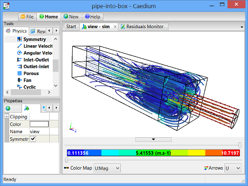
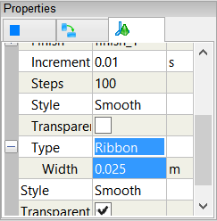

Particles or Streamlines
Particles (also known as streamlines) in Caedium represent the instantaneous path of massless particles through a flow volume or along a face if so constrained.
Streamlines for a CFD Simulation
Assumptions
- To create particles you will need to have activated the Caedium RANS Flow add-on, the Caedium Panel Flow add-on, or Caedium Professional.
- To create animated particles you will need to have additionally activated the Caedium Transient add-on, if you are not using the Caedium Professional add-on.
- You are familiar with Caedium essentials.
- You have an existing simulation with flow results.
Creating Particles
To create particles:
- In the Results Tool Palette drag and drop a Vector Field (usually velocity) onto an entity in the View Window that you want to serve as a source seed, e.g., a face.
- Double-click the entity in the Select dialog - note you can also select multiple source seeds.
- Select Set Particles Target from the menu.
- Select the face or volume to serve as the target for the particles.
An existing mesh or a newly created mesh on the source seed serves as the source for the particles - specifically a streamline is created at each mesh node on the source. In the Physics Tool Palette the Accuracy tool provides a way to control the number of mesh nodes and therefore the number of streamlines.
For a tutorial that details how to create particles in the context of an overall CFD simulation process review "Incompressible Flow Through a Pipe into a Box."
Properties of Particles
The control properties for the particles are presented in the Properties Panel under the View tab for the source seed.

There are some standard Caedium visual representation properties for particles, such as color and finish, which are described elsewhere. The particles-specific properties are:
- Direction - determines the time integration direction. Options are:
- Forward - downstream
- Backward - upstream (useful to visualize how a fluid arrived at a certain place)
- Both - i.e., forward and backward
- Duration - maximum particle travel time.
- Increment - equivalent to the time-step for the time integration. Indirectly it determines the accuracy of the streamline integration. You may need to decrease this property by factors of 10 to make streamlines appear or to better resolve high velocity gradients.
- Steps - maximum number of intervals along a streamline. This prevents infinite streamline lengths in slow moving fluid, such as in a recirculation region. You may need to increase this property by factors of 2 to see the full extent of the streamlines.
- Type - visual representation options are:
- Curve
- Point
- Ribbon
- Tube
- Surface
Color Map
To color particles by a Scalar Field, such as velocity magnitude, you simply drag and drop the relevant scalar field tool from the Results Tool Palette onto the source seed entity.
Animated Particles
Note it is good practice to create an animation using a copy of the original .sym file, so if you make a mistake you don't corrupt a converged simulation.
To create animated particles:
- In the Home Toolbar click the Lock button to prevent the flow solver from running.
- Click the Start button to reset the animation.
- Create particles as described above
- Set the Particles->Direction to Forward, and set the Particles->Type to Point. Set Type: Point->Type to your point shape selection, e.g., Arrow 3D. Set the associated Scale to a reasonable value for your model size. The Interval property determines how frequently the source seed releases a new set of particles into the flow.
- Select sim in the View Window and in the Properties Panel select the Simulation tab . Expand the Time property and adjust the Time->Duration and Time->Increment to determine the number of frames for the animation (Time->Duration divided by Time->Increment). For each frame the particles will move the distance derived from the Time->Increment value.
- [Optional] To record the animation as a movie (.avi) click the Record button .
- Click the Run button to run the animation.
- [Optional] Toggle Record to complete the movie and review it in a movie player.
For an animated particles movie example (with an animated camera too) see "Open Wheel Race Car CFD Analysis."
Feedback
Questions? Ideas? Problems?